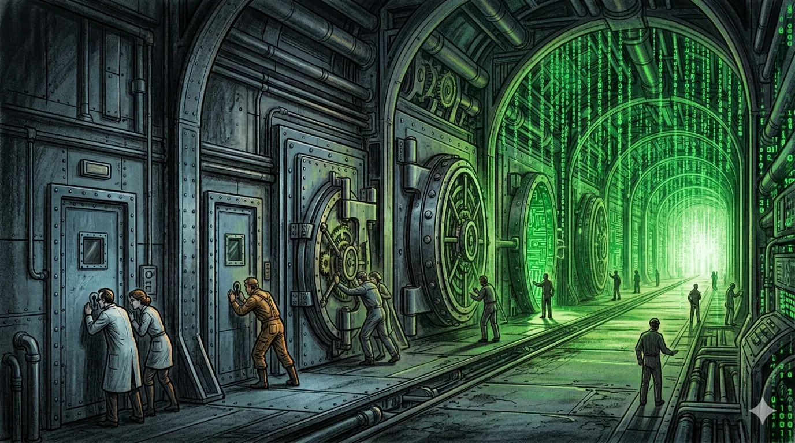

State of the Future: Friday Four
Dispatch from 11th April 2026: AI Now Behind Closed Doors


Welcome to all the new subscribers. Come for the neuroscience, stay for the.. Mainly AI at this point. AI and semi. Future of work adjacent.
Re this whole AI thing then yes. Hype? Appreciate lots of nuanced views out there about capital bubbles, the Carlota Perez framework, railway buildouts etc. Nothing new to see here. Hypers gonna hype. This time is never different. All General Purpose Technologies have a similar shape to AI. It’s just chatbots. $650 billion+ in datacentre capex this year, OpenAI at an $852 billion valuation despite only shipping its first product in 2022. Chatbots. And they hallucinate. Can’t be used in real world. Etc.
Also The Big Short Guy is smart, he’s onto something about depreciation. We all saw the recursive funding image. Sure smells funky right?
Well as you know, I am indeed scale-pilled. But you can’t see what happened this week and continue to hold the: “it’s probably fine” attitude. I will stick my neck on the line, right now, and make it clear if I haven’t already, all of this capex will be used. And we aren’t even building enough. It is 100% not a bubble.
Anthropic built a tool that is better than every cybersecurity company on earth. It found and exploited a 17-year-old vulnerability in FreeBSD that every security team on earth missed. For $50 in API costs. It found thousands of zero-days across every major operating system and every major web browser. Thousands. A 27-year-old OpenBSD bug. In a few weeks, one model did what the entire cybersecurity industry couldn’t do in decades.
And it’s not a cybersecurity company.
That’s a market worth $250 billion. Just totally p*nwed.
And it just hit $30 billion in annualised revenue. Up from $9 billion 4 (FOUR) months ago. And what, you think, that’s probably it? These models are going to run out of steam? And this is still hype?
More than that, Anthropic built something and then they decided not to release it. Too dangerous. Which, if you think about it for more than thirty seconds, means Anthropic just outcompeted every cybersecurity company in existence and then immediately became the gatekeeper of who gets to use that capability. CrowdStrike. Palo Alto Networks. The entire $250 billion security industry. Outperformed by a language model that wasn’t even specifically trained for security, it just got good enough at code and reasoning and the rest followed. The capabilities emerged as a “downstream consequence of general improvements.” Not a research programme in sight. A side effect.
So no, I don’t think this is hype. I think we’re now in the part where the best frontier capabilities stay inside the labs and get deployed through consortiums rather than released to the public. Or not through consortiums at all, when the Chinese Labs get on it.
Do you see it yet? If you can build or use something like Claude Mythos, offence and defensive cyber warfare just depended on your frontier AI capabilities and your ability to build datacentres. If this isn’t a national security emergence yet, then I guess we have to wait fore the inevitable cyber attacks on critical infrastructure before we wake up.
Anyway onwards.
1. Anthropic Builds a Model Too Good to Release
So yes, Claude Mythos Preview. That’s what they’re calling it. On Monday Anthropic launched Project Glasswing, a consortium of all the big names, Apple, AWS, Microsoft, Google, CrowdStrike, NVIDIA, JPMorgan?, the Linux Foundation, and gave them access to a model they won’t give to anyone else. $100 million in usage credits and $4 million to open-source security orgs. First time in roughly seven years that a leading AI company has published a System Card for a model without making it generally available.
Opus 4.6 had a near-0% success rate at autonomous exploit development. Mythos achieved 181 working Firefox exploits versus 2, which isn’t really an improvement so much as whatever comes after improvement. Greg Kroah-Hartman from the Linux kernel team said “something happened a month ago, and the world switched. Now we have real reports” rather than low-quality AI noise. The FreeBSD exploit, a 20-gadget ROP chain split across six sequential RPC requests, worked fully autonomously without any human guidance. You might argue with a different objective that this is the first autonomous weapon we’ve created?
But less than 1% of the vulnerabilities Mythos found have actually been patched, and 8 out of 8 tested models detected the FreeBSD exploit, including one tiny model at 3.6 billion parameters costing eleven cents per million tokens. So maybe every decent model can already find bugs faster than humans can fix them and we just haven’t been looking. Picus Security called it the Glasswing Paradox, your best defensive tool is also the thing most likely to break you, and honestly i don’t know where that leaves us except hoping that the people doing the patching move faster than the people who won’t bother with a consortium. We’ll see.
Remember Issues #4 and #5? The company the Pentagon designated a “supply chain risk” just proved it could break the government’s own infrastructure. One model generation. Shit.
Source: Anthropic Red Team Blog | Project Glasswing | Simon Willison
2. Meta Goes Closed. Mark Zuckerberg Discovers Intellectual Property.
Mark is back. Meta shipped Muse Spark on Tuesday. Natively multimodal, three reasoning modes (Instant, Thinking, Contemplating), built by Alexandr Wang’s Meta Superintelligence Labs after nine months rebuilding the AI stack from scratch following the $14.3 billion Scale AI deal.
The weights aren’t available though, and neither is the architecture or the training methodology, which makes this Meta’s first proprietary model. The company with 1.2 billion Llama downloads, a million a day, just shipped a closed model because Llama 4 flopped last April and Chinese open-weight models captured 41% of HuggingFace downloads versus 35% for US models. Turns out giving away your best work for free doesn’t generate the API revenue you need when you’re guiding $115-135 billion in capex. Who knew.
Zuckerberg said they “hope to open-source future versions.” Hope. The community noticed the word choice. It’s a war Mark, might want to start protecting the weights. Open-source hippies can go back to the 90s.
Meta already gave Llama to the Pentagon and NATO, but open weights meant everyone could use them, China included, and going closed gives you the kind of export control leverage you can actually trade on in Washington. A seat at the table that Anthropic is currently being kicked from. Ranked 4th on Artificial Analysis, just behind Claude Opus 4.6 at 53 (Gemini 3.1 Pro and GPT-5.4 both at 57), so not quite frontier but 3 billion users on day one. And the thought compression technique, 10x less compute than Llama 4 Maverick for equivalent capability, if that holds up under independent testing it’s actually massive. But Meta’s track record on benchmark claims is, uh. Anyway.
Source: HumAI | Simon Willison
3. Your AI Agent Can Now Spend Your Money
More on agents. Because if they can find exploits and zero-days, why not give them wallets to pay for stuff too?! Nevermined integrated Visa Intelligent Commerce with Coinbase’s x402 protocol, which means AI agents can now autonomously purchase things with your Visa card on the internet, and yes i am aware of how that sounds.
x402 uses the HTTP 402 “Payment Required” status code that’s been sitting there unused since literally forever. Stablecoins, USDC and EURC, on Base, Solana, Polygon, with 50 million transactions processed since launching May 2025. Now it plugs into Visa. You register a card, set guardrails (budget limits, per-purchase caps, merchant restrictions, time windows), and your agent goes shopping while merchants receive payments through Stripe or whatever they already use, no new infrastructure required.
Nevermined’s session-based credits system lets agents burn prepaid credits in real time as they consume resources, like LLM tokens but for commerce, with transactions as low as $0.001 settling in under 200 milliseconds on Base. Which means agents can run persistent shopping sessions with streamed access to services.
i know what you’re thinking. “Agents buying things autonomously, what could go wrong.” And yes, vibes-based security from Issue #5 is now vibes-based commerce. But think about what this actually unlocks, the entire long tail of digital services, API access, dataset queries, articles behind paywalls, all the stuff that agents currently can’t reach because there’s no payment mechanism. That bottleneck is now solved, sort of. The guardrails exist on paper and we’ll see how they hold up when someone’s agent burns through a $500 budget in three minutes buying API calls for a task that went sideways. Not that i would know anything about runaway Claude Code costs. Definitely not twice.
Source: Crypto Briefing | Nevermined
4. MCP v2.1 and the Linux Foundation
Platform shifts generally produce a decade-long standards war where three or four protocols fight it out and the ecosystem fragments and everyone picks a side and writes angry blog posts and then eventually one wins but only after wasting years of developer time? MCP just skipped all of that. Everyone just agreed to do the same thing. Anthropic, OpenAI, Google, Microsoft, Amazon, and the Linux Foundation’s Agentic AI Foundation now governing both MCP and A2A after being co-founded by basically all of them in December 2025. Microsoft shipped Agent Framework 1.0 on top of it. v2.1 adds Server Cards so servers can advertise their capabilities without you having to connect to them first, which sounds boring until you realise it’s the thing that makes agent-to-agent discovery actually work at scale.
i use MCP every day, it connects Claude Code to my Granola notes, my email, my CRM, my calendar, and i genuinely don’t think about it anymore. Until I tried to connect my 3 superhuman accounts, and now it’s a cluster for some reason. OAuth is like the worst. But aside from that, when infrastructure disappears into the background it means it’s working, and when it’s working it means people build on top of it without asking permission, and when they do that you get 10,000+ servers in the ecosystem and then it’s too late for anyone to propose an alternative. Network effects in protocols are brutal once they tip, and this one tipped before it become a race.
Bur remember, 97 million monthly downloads is also 97 million potential attack surfaces, and 36% of MCP servers were vulnerable to SSRF when we covered ClawHub in Issue #5. We’re building the agent economy’s entire commercial and operational layer on top of protocol infrastructure that nobody has seriously stress-tested for adversarial use. (Maybe Mythos can help?) It’s load-bearing software with vibes-based security. But also it works and it’s free and everyone is using it so here we are. As per.
Source: Linux Foundation | GitHub Blog
—-
Thanks again for all your hard work. I appreciate you. If you missed it from earlier this wee/k.